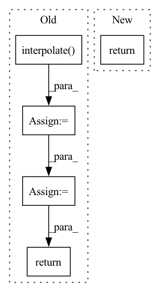

Pattern ID :28600

Before Change
def forward(self, preds: Tensor, targets: Tensor) -> Tensor:
// preds in shape [B, C, H, W] and targets in shape [B, C, H, W]
if preds.shape[2:] != targets.shape[2:]:
preds = F.interpolate(preds, size=targets.shape[2:], mode="bilinear", align_corners=False)
tp = torch.sum(targets*preds, dim=(2, 3))
fn = torch.sum(targets*(1-preds), dim=(2, 3))
fp = torch.sum((1-targets)*preds, dim=(2, 3))
dice_score = (tp + 1e-6) / (tp + self.delta * fn + (1 - self.delta) * fp + 1e-6)
dice_score = torch.sum(1-dice_score, dim=-1)
// adjust loss to account for number of classes
dice_score = dice_score / targets.shape[1]
return dice_score.mean()
After Change
def forward(self, preds, targets: Tensor) -> Tensor:
if isinstance(preds, list):
return sum([w * self._forward(pred, targets) for (pred, w) in zip(preds, self.aux_weights)])
return self._forward(preds, targets)
In pattern: SUPERPATTERN
Frequency: 4
Non-data size: 5
Instances
Fragment ID: 84468616
Project Name: sithu31296/semantic-segmentation
Commit Name: b68900992fb24dd5166b2b34e3d35d19493d747d
Time: 2021-08-21
Author: sithu31296@gmail.com
File Name: utils/losses.py
M Class Name: Dice
N Class Name: Dice
M Method Name: forward(3)
N Method Name: forward(3)
M Parent Class: nn.Module
N Parent Class: nn.Module
M File Name: utils/losses.py
N File Name: utils/losses.py
M Start Line: 48
M End Line: 62
N Start Line: 77
N End Line: 80
'>
Before Change
def forward(self, preds: Tensor, labels: Tensor) -> Tensor:
// preds in shape [B, C, H, W] and labels in shape [B, H, W]
if preds.shape[2:] != labels.shape[1:]:
preds = F.interpolate(preds, size=labels.shape[1:], mode="bilinear", align_corners=False)
n_min = labels[labels != self.ignore_label].numel() // 16
loss = self.criterion(preds, labels).view(-1)
loss_hard = loss[loss > self.thresh]
if loss_hard.numel() < n_min:
loss_hard, _ = loss.topk(n_min)
return torch.mean(loss_hard)
class Dice(nn.Module):
After Change
def forward(self, preds, labels: Tensor) -> Tensor:
if isinstance(preds, list):
return sum([w * self._forward(pred, labels) for (pred, w) in zip(preds, self.aux_weights)])
return self._forward(preds, labels)
class Dice(nn.Module):
'>
Fragment ID: 84468623
Project Name: sithu31296/semantic-segmentation
Commit Name: b68900992fb24dd5166b2b34e3d35d19493d747d
Time: 2021-08-21
Author: sithu31296@gmail.com
File Name: utils/losses.py
M Class Name: OhemCrossEntropy
N Class Name: OhemCrossEntropy
M Method Name: forward(3)
N Method Name: forward(3)
M Parent Class: nn.Module
N Parent Class: nn.Module
M File Name: utils/losses.py
N File Name: utils/losses.py
M Start Line: 25
M End Line: 37
N Start Line: 46
N End Line: 49
'>
Before Change
def forward(self, x):
B, C, H, W = x.shape
h = F.interpolate(x, (H * 2, W * 2), mode="nearest")
if self.with_conv:
h = self.Conv_0(h)
return h
class Downsample(nn.Module):
After Change
self.conv = nn.Conv2d(dim, dim, 3, padding=1)
def forward(self, x):
return self.conv(self.up(x))
class Downsample(nn.Module):
'>
Fragment ID: 84468626
Project Name: janspiry/image-super-resolution-via-iterative-refinement
Commit Name: 1a5a8bc409a8b8e072eb2bf25330d4662fd279c4
Time: 2021-08-09
Author: lw_jiang@foxmail.com
File Name: model/ddpm_modules/unet.py
M Class Name: Upsample
N Class Name: Upsample
M Method Name: forward(2)
N Method Name: forward(2)
M Parent Class: nn.Module
N Parent Class: nn.Module
M File Name: model/ddpm_modules/unet.py
N File Name: model/ddpm_modules/unet.py
M Start Line: 147
M End Line: 151
N Start Line: 49
N End Line: 49
'>
Before Change
if self.aux_classifier is not None:
x = features["aux"]
x = self.aux_classifier(x)
x = F.interpolate(x, size=input_shape, mode="bilinear", align_corners=False)
result["aux"] = x
return result
After Change
result = OrderedDict()
x = features["out"]
x = self.classifier(x)
return F.interpolate(x, size=input_shape, mode="bilinear", align_corners=False)
'>
Fragment ID: 84468582
Project Name: dsgoficial/pytorch_segmentation_models_trainer
Commit Name: d6ce8d7c01a19ee9287cf6a73032e35648855a0b
Time: 2021-06-30
Author: philipeborba@gmail.com
File Name: pytorch_segmentation_models_trainer/custom_models/utils.py
M Class Name: _SimpleSegmentationModel
N Class Name: _SimpleSegmentationModel
M Method Name: forward(2)
N Method Name: forward(2)
M Parent Class: nn.Module
N Parent Class: nn.Module
M File Name: pytorch_segmentation_models_trainer/custom_models/utils.py
N File Name: pytorch_segmentation_models_trainer/custom_models/utils.py
M Start Line: 38
M End Line: 52
N Start Line: 42
N End Line: 43